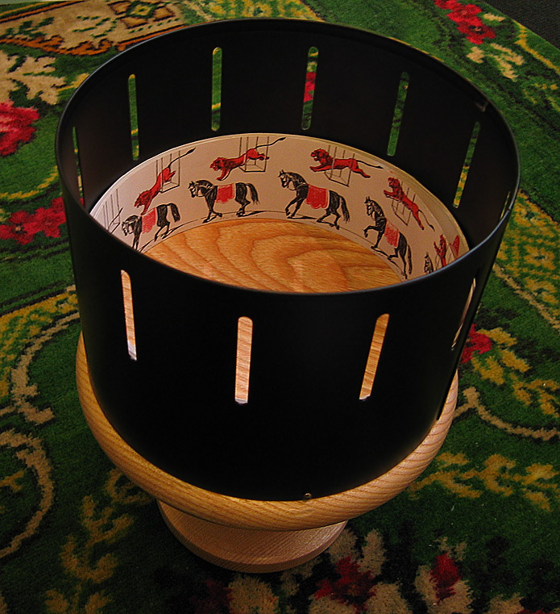

Plus ancien que les caméras
Certains font remonter l'histoire du cinéma d'animation jusqu'à la Préhistoire pour trouver dans les peintures rupestres les premières représentations d'animaux en mouvement. D'autres font commencer l'histoire de l’animation au XVIIe siècle, avec un curieux objet dont le nom réveille l'imagination : la lanterne magique. Une chose est sûre, l'animation a commencé avant le cinéma. Au cours du XIXe siècle, l'animation se manifeste grâce à d'autres machines astucieuses, ou jouets scientifiques, basées sur une illusion d’optique, tels :
Le phénakistiscope (1832) : un disque percé d'une dizaine de fentes entre lesquelles figurent des dessins. Pour observer les images s'animer, le spectateur doit se placer devant un miroir, mettre le disque en rotation et regarder à travers les fentes.
Le zootrope (1834) : même principe que le phénakistiscope mais avec un tambour horizontal au lieu d'un disque. L'observation ne nécessite pas de miroir.
Le folioscope, ou flipbook en anglais (1868) : très simple à réaliser, il se présente sous la forme d'un petit livret de dessins à feuilleter rapidement pour produire l'animation.


Quelques studios d'animation célèbres...
| Studio d'animation | Pays du studio | Nombre de films | Films les plus connus |
|---|---|---|---|
| Walt Disney Pictures | Etats-Unis | 125 | "Aladdin" (1992), "Le roi lion" (1994), "Peter Pan" (1953) |
| Dreamworks Animation SKG | Etats-Unis | 37 | "Kung Fu Panda" (2008), "Shrek" (2001), "Dragons" (2010) |
| Warner Bros Animation | Etats-Unis | 21 | "Happy Feet" (2006), "Les noces funèbres" (2005), "Le pôle Express" (2004) |
| Pixar Animation Studio | Etats-Unis | 22 | "Monstres et Cie" (2001), "Toy Story" (1995), "Le monde de Nemo" (2003) |
| Universal Pictures | Etats-Unis | 19 | "Moi, moche et méchant" (2010), "Casper" (1995), "Le Lorax" (2012) |
| Studio Ghibli | Japon | 21 | "Mon voisin Totoro" (1988), "Le voyage de Chihiro" (2001), "Princesse Mononoke" (1997) |
| Madhouse | Japon | 14 | "Les enfants loups" (2012), "La traversée du temps" (2006), "Piano Forest" (2007) |
| Les Armateurs | France | 11 | "Kirikou et la sorcière" (1998), "Ernest et Célestine" (2012), "Pourquoi j’ai pas mangé mon père" (2015) |